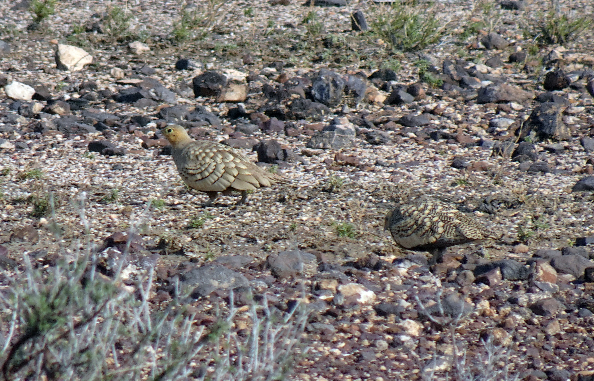

The Chestnut-bellied Sandgrouse is a medium-sized ground-dwelling bird adapted to hot, dry landscapes, with cryptic sandy-brown plumage and a distinctive chestnut-coloured belly. It is usually found in arid and semi-arid regions, including desert plains, dry scrub, rocky areas, and open grassland. It spends much of its time walking or resting on the ground and may gather in flocks, particularly around water sources. Compared with the Painted Sandgrouse, the Chestnut-bellied Sandgrouse has a different overall plumage pattern and lacks the Painted Sandgrouse's more strongly marked facial and body pattern. It is generally more uniformly sandy and cryptic, helping it blend into dry ground and desert vegetation. Compared with pigeons and doves, it has a more compact ground-bird shape, longer pointed wings, and behaviour strongly associated with open arid country. It also has short legs and a largely terrestrial lifestyle rather than the frequent tree-perching behaviour of many doves. The Chestnut-bellied Sandgrouse's cryptic plumage is particularly useful for camouflage in its dry habitat. Its combination of sandy-brown coloration, chestnut belly, compact body, and desert habitat makes it distinctive among India's dry-country birds.